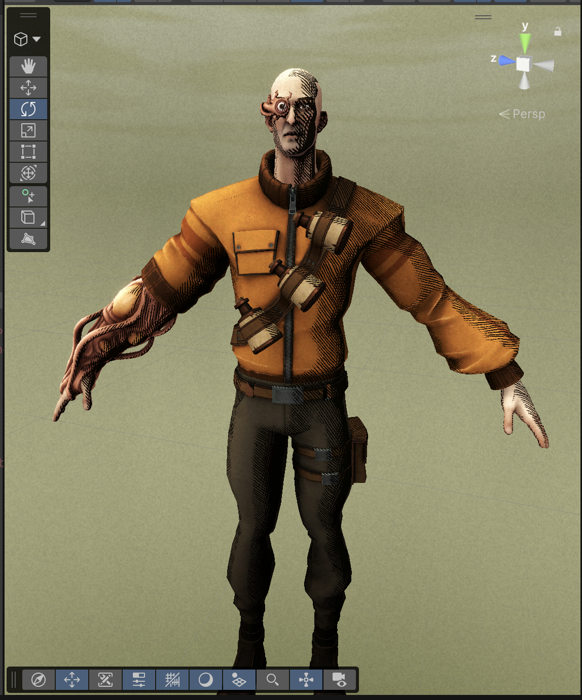
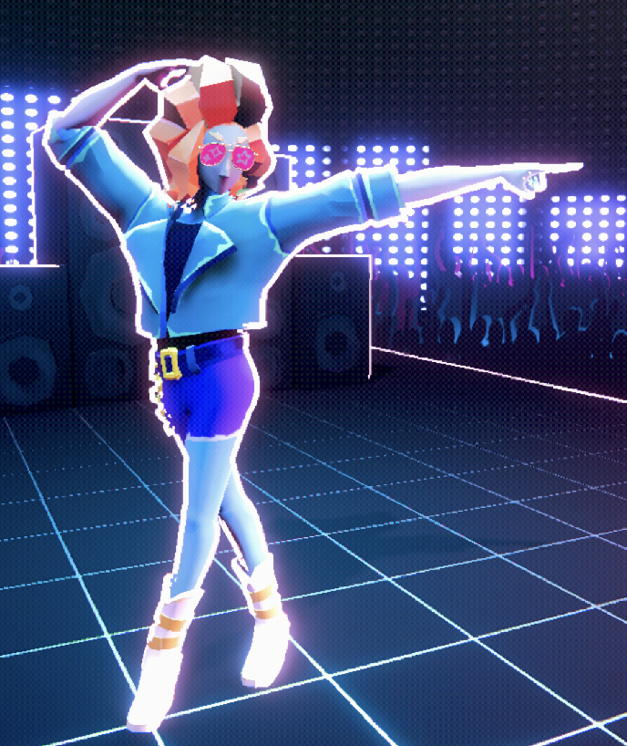
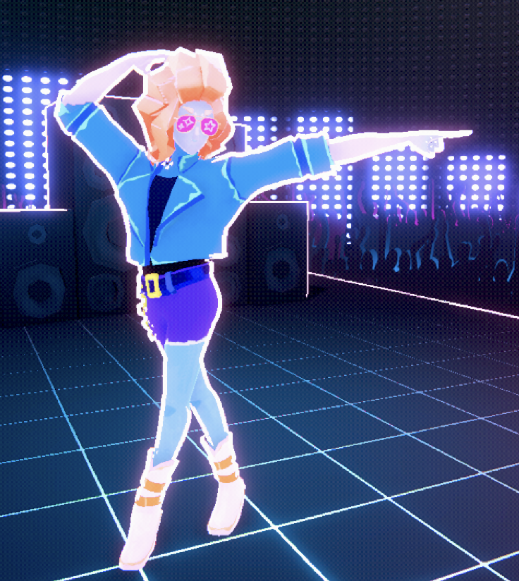
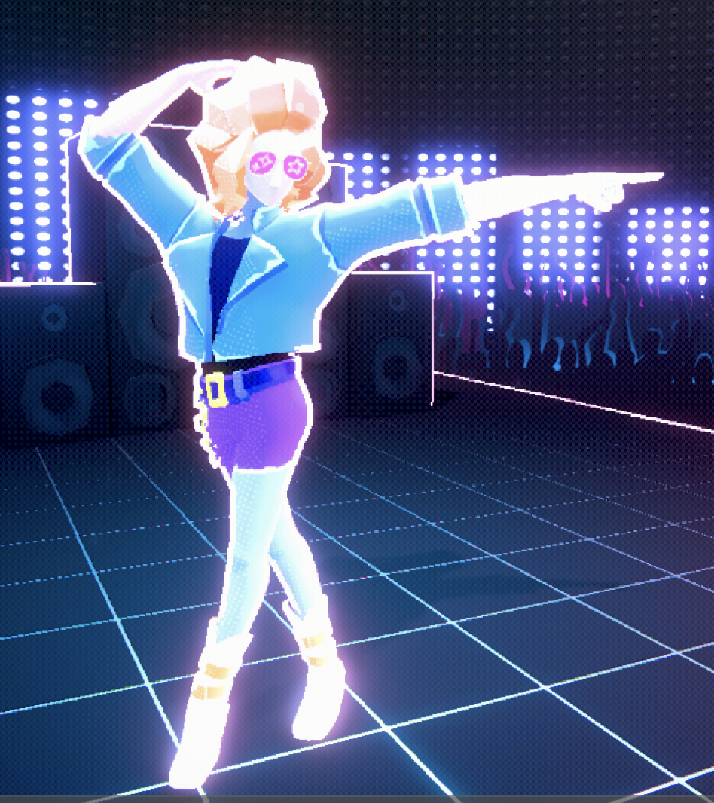

Shaders and particle systems created in Unity URP, using HLSL
A series of shaders and particle systems built across a variety of game projects, combining node-based programming with hand-written HLSL. The VFX themselves are implemented across the Shuriken Particle System and the VFX Graph.
Stylized shader for Custom Lighting Model
I built a fragment shader using Amplify Shader Editor and HLSL code to render objects in a graphic novel aesthetic.
The shader reads lighting data from the scene, from the main light and all additional lights.
This data is combined with the object's normal map data to create a mask for the shadows.
The threshold of the mask can be easily manipulated by the user via exposed properties.
This mask is updated in real-time if the lights change or the object moves.
The mask is used to define how shadows should render in dark regions. In this case, I use a tiered system
where the darkest regions are entirely black, mid shadows are cross-hatched, and lighter shadows are single-line hatched.
This is achieved through exposed properties that allow texture inputs for the shadow patterns. The lightest regions of the
object are overlayed with a halftone pattern (This is clear in the video).
These shading effects are ultimately combined with an emission map and rim light to push the visual appeal.

IMAGEShowcasing shader versatility and a comparison with the default types

IMAGE
IMAGE
IMAGEAttack VFX for Pose Pose Execution
The VFX carried all of the visual feedback for player interaction.
For each of the 4 possible moves,
I built two versions of each effect — one for a failed execution, one for a successful one. The VFX that play are pre-calculated in a script at the end of each turn
and displayed during the execution phase. The failing effect matches the succeeding effect
up to a certain point to maintain suspense as moves are executed against each other. Each of the 8 visual effects are made on Unity's
node-based VFX graph. They include multiple particles and sub-emitters that are carefully timed and meticulously organized to make
player action feel responsive and satisfying. The VFX for different moves is also timed alongside one another to create the illusion of
genuine interaction.
Shader graphs, particle systems, and sub-emitters for ANEURISM IV
Fire
A custom shader that uses a layered noise texture to dissolve a fire image texture. The shader exposes properties for color and noise frequency/scale that the PS manipulates over a particle's lifetime. This effect is combined with a smoke particle system that uses a sprite sheet.
Water
A lightweight water simulation. This fragment shader uses a render texture and a particle system to generate normals for the water when an object moves on its surface. These normals create the impression of fluid motion. The shader itself uses refraction, the depth buffer, and edge detection (foam) for additional realism.
Rain
Layered particle systems for the falling rain, with some particles triggering ripple sub-emitters on collision.